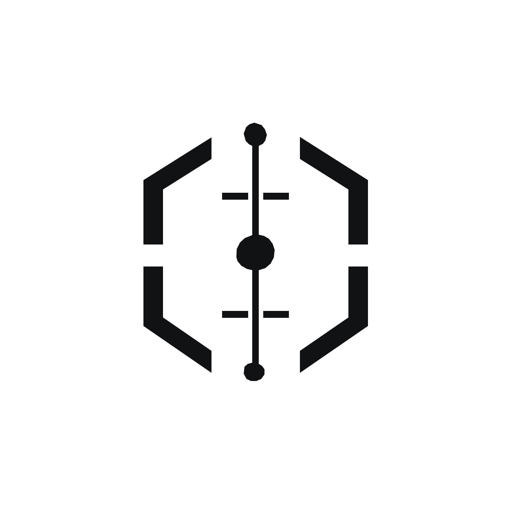

KanonHuman-approved, Privy-enforced wallet authority for financial AI agents, with a company-controlled ENSv2 identity. A software update cannot quietly widen what an agent may do.
The agent can do far more than its task. App-level checks fail to a bug or a prompt injection.
Version 2 asks for more spending power and keeps the old wallet access. Nothing forces a review.
Nobody outside can check which release a company approved or whether that authority was revoked.
Signing every transaction by hand is safe, and it defeats the point of automation.
Declared capability, company terms, deterministic permissionHash, exact human approval, permission diff on every release, revocation.
Company-owned wallet. The agent gets a dedicated delegated signer with a signer-specific policy. Privy rejects anything outside it.
Agent name under the company namespace with protected records: agent ID, approved release, permission hash, status.
Privy first, ENS second: the public record never claims authority the wallet does not enforce.
| Idea | What it means |
|---|---|
| Release-bound approval | The decision binds release ID, package hash, manifest hash and permissionHash. A changed authority cannot reuse it. |
| Fail-closed permission diff | Every release is NO_CHANGE, NARROWER, EXPANDED, SUBSTITUTED or UNKNOWN. Only provably equal or narrower changes skip review. |
| Honest policy compiler | If Privy cannot enforce a term on the chosen execution method, Kanon refuses to compile. It never approximates a limit. |
| Two planes, strict order | Privy enforces money movement. ENSv2 publishes identity and approved state, written only after Privy confirms. |
Kanon was first built at ETHOnline 2026. Git history shows the original work unchanged.
Crypto-native startups, DAOs, and teams paying contributors or vendors onchain.
"This agent, this release, this much, to this recipient", enforced by the wallet and visible on ENS.
Payroll, treasury rebalancing, recurring payments or a company's own agent. Kanon is agent-agnostic.
Human attention goes to authority changes, not to every routine payment.
Current limits: Sepolia testnet only, not audited, not production custody, no external users.
An agent receives exactly the authority a human approved, and a software update cannot silently widen it.
Try it: kanon-agents.vercel.app
Code: github.com/CryptoZephyr/Kanon (MIT)